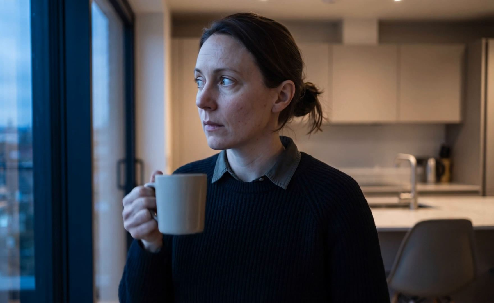
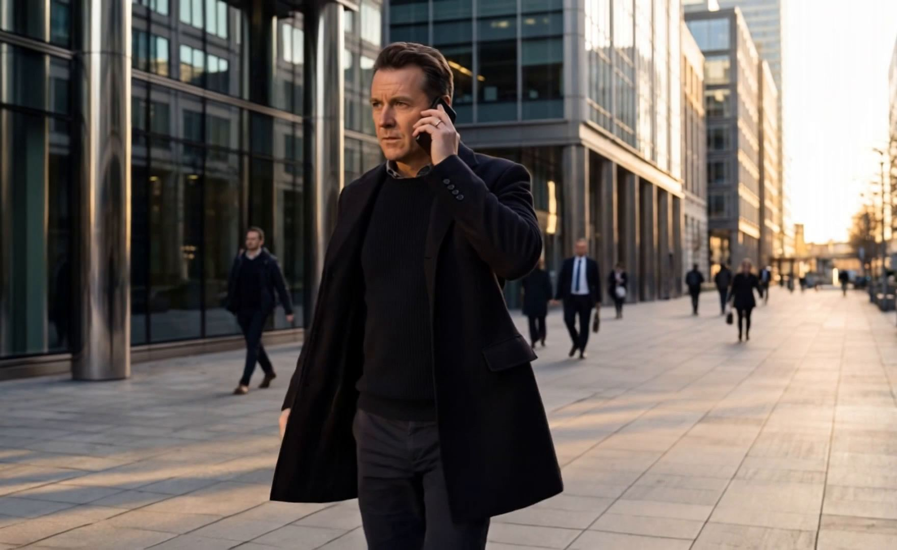

Dreamforce 2026·A private screening
Credit 360
Your whole book.
Already awake.
01/07
Somewhere, a banker is about to open eleven tabs.
Eleven systems, one relationship, and a morning spent reconciling them by hand.
02/07
It knows who needs you today.
The book is read before you open it. Exposure, utilisation and the queue are already counted.
Friday, September 4·Your book
Nine relationships need you today.

Every system, one screen.
03/07
Systems, client emails and internal threads all land here, already digested.
Six integrations resolve before the first question is asked. You never open one of them.
Updated tasks, used 6 integrations, used a skill
One brain of plugins
04/07
Every relationship, drawn.
Owners, affiliates and the borrower, with the guaranty on the edge that carries it.
05/07
Say it in one sentence.
No form, no screen to find. The facility changes in the window the question was asked in.
Checked as you type. Policy, covenant headroom and collateral coverage all still hold.

Every change, one sentence.
06/07
The memo writes itself alongside.
Not after the decision. During it, section by section, with every source on the record.
Drafting the memo for this package: 0 of 9 sections
Ask. Approve. Done.
07/07
Ask. Approve. Done.
The plan is read back before anything moves. One control commits it, and the record closes behind it.
Review and execute